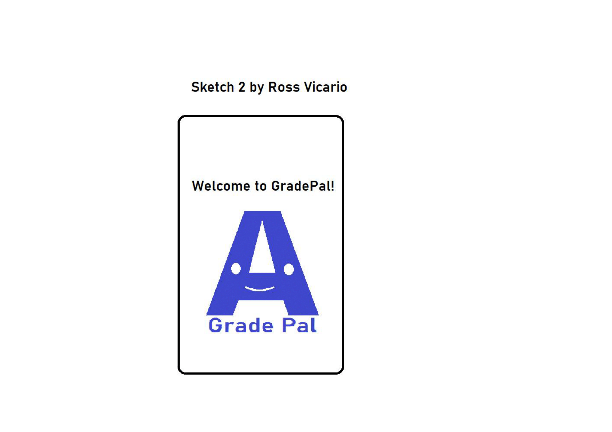
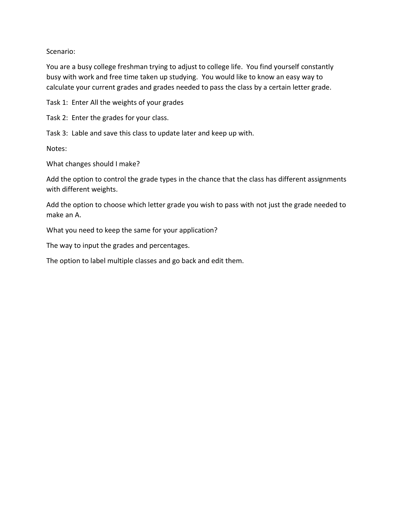
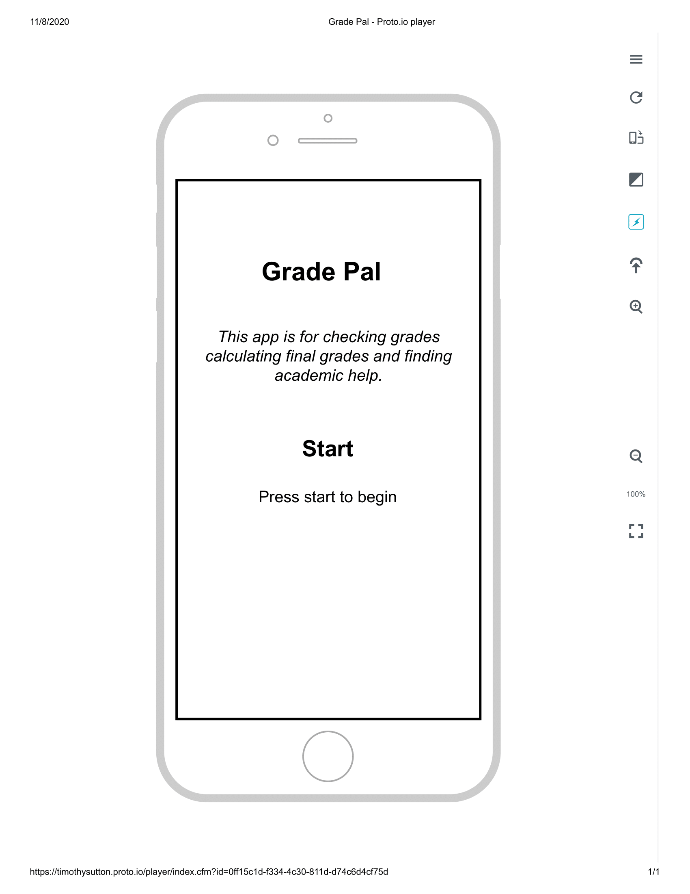

Problem Statement: Final Grades

A common problem facing students is determining what grade they would need on the final exam to receive an A or pass the class at the end of a semester. As such, our solution should allow students to view and calculate their grades in their respective classes, and to see what grades they need for their specified purposes.
Affinity Diagram: Final Grades

My group and I worked to brainstorm things pretaining to final grades.
Personas: 4 Personas for Final Grades

Personas for typical Final Grade app users.
Storyboards: Storyboard Sarah Campbell

A comic illustrating the need for an app that calculates final grades.
Sketch: Grade Pal App
Multiple potential app solutions to final grade problem.
Usability Testing: Grade Pal App
A scenario and tasks and the outcome of usability tests.
Low-Fi Prototype: Grade Pal App
A scenario and tasks and the outcome of usability tests.